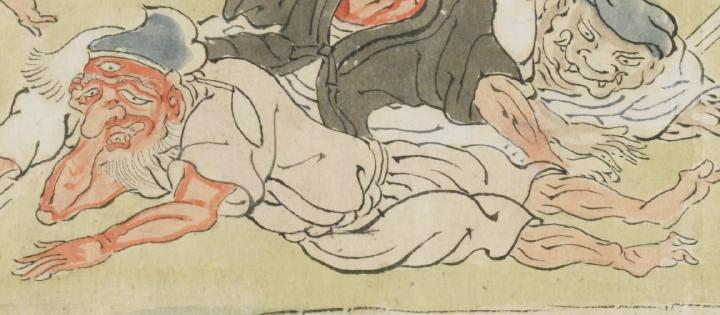

三つ目の鬼。顔は赤く、長い鼻をしている。青い帽子をかぶり、白い衣服を着ている。床に寝そべり、頬杖をついている。
出典：親書誌：U426_nichibunken_0079：酒天童子絵巻；シュテンドウジエマキ／日付：2006／資源識別子：U426_nichibunken_0079_0008_0004
Copyright (c)2010- International Research Center for Japanese Studies, Kyoto, Japan. All rights reserved.